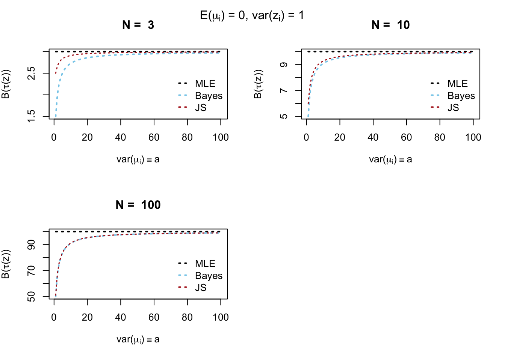
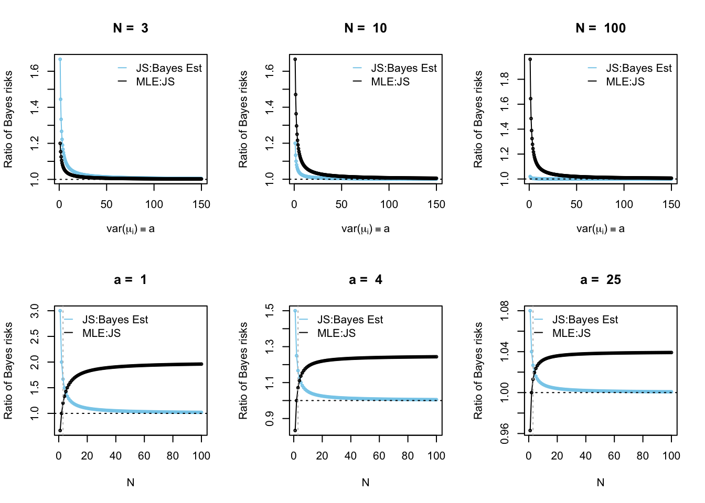
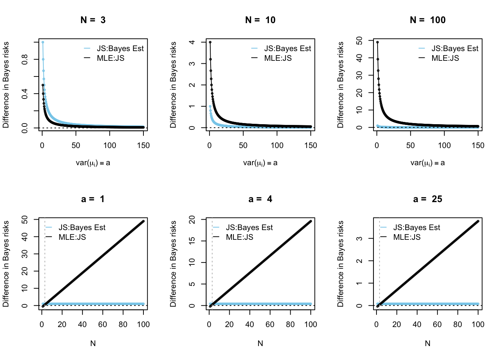

Using notation from this section:
\[\begin{aligned} \mu & \sim N_N(\theta \boldsymbol{1}, A) \\ z | \mu & \sim N_N(\mu, B) \\ \mu | z & \sim N_N\left( [A^{-1} + B^{-1}]^{-1}[A^{-1}\theta + B^{-1} z], [A^{-1} + B^{-1}]^{-1} \right) \hskip 2cm [tgs] \end{aligned}\]Take the case where \(\theta = 0\), \(A = a I\), and \(B = I\). This gives us
\[\begin{alignat*}{3} \mu & \sim N_N(0, aI) \hskip 4.5cm && lsi \, (1.8) \\ z | \mu & \sim N_N(\mu, I) && lsi \, (1.9) \\ & && \\ \mu | z & \sim N_N\left(\frac{a}{a+1} \cdot z, \frac{a}{a+1} \cdot I \right) && lsi \,\, (1.10) \,\, [tgs] \\ z & \sim N_N(0, (a + 1) \cdot I) && lsi \,\, (1.20) \end{alignat*}\]such that \(\mu_i \overset{iid}{\sim} N(0, a)\) and \(z_i|\mu_i \overset{ind}{\sim} N(\mu_i, 1)\) (as in \(lsi \, (1.7)\)).
The figure below displays the (Bayes) risks as a function of \(a\) (the variance of \(\mu_i\)) for various values of \(N\). Note that the risk of the MLE is constant as a function of \(a\). The (Bayes) risks of the Bayes and James-Stein estimators approaches the risk of the maximum likelihood estimator as \(a \to \infty\) (but does not converge to being equal).
Also note that the risk of the James-Stein estimator converges to the (Bayes) risk of the Bayes estimator as \(N \to \infty\).
plotFun <- function(a, N) {
mle.bayes.r = N + 0*a ## add that last piece so that it naturally becomes a vector
true.bayes.r = (a/(a+1))*N
js.bayes.r = N - (N-2)/(a+1)
plot(a, mle.bayes.r, type = 'n',
xlab = expression(paste("var(", mu[i], ")" %==% a)),
ylab = expression(paste("B(", tau, "(z))")),
main = paste("N = ", N),
ylim = c(min(mle.bayes.r, true.bayes.r, js.bayes.r),
max(mle.bayes.r, true.bayes.r, js.bayes.r)))
lines(a, mle.bayes.r, lty = 3, lwd = 2)
lines(a, true.bayes.r, lty = 3, lwd = 2, col = 'skyblue')
lines(a, js.bayes.r, lty = 3, lwd = 1.5, col = 'firebrick')
legend("bottomright", c("MLE", 'Bayes', "JS"),
col = c("black", "skyblue", "firebrick"),
lty = rep(3, 3),
lwd = rep(2, 3),
bty = "n",
y.intersp = 1,
seg.len = 0.8)
}
par(mfrow = c(2,2))
plotFun(a = 1:100, N = 3)
plotFun(a = 1:100, N = 10)
plotFun(a = 1:100, N = 100)
mtext(expression(paste("E(", mu[i], ") = 0, var(", z[i], ") = 1")), side = 3, line = -2, outer = TRUE)
par(mfrow = c(1,1))
The relationship between Bayes estimator and James-Stein estimator risk (bayes) values:
\[\begin{alignat*}{3} & \frac{B\left(\widehat{\mu}^{(\text{JS})}\right)}{B\left(\widehat{\mu}^{(\text{Bayes})}\right)} && = \frac{\frac{a}{a+1} N + \frac{2}{a+1}}{\frac{a}{a+1} N} \\ & && = 1 + \frac{2}{a+1} \frac{a+1}{a \cdot N} \\ & && = 1 + \frac{2}{a \cdot N} \hskip 1.5cm lsi \,\, (1.25) \\ & && \\ & && \\ & B\left(\widehat{\mu}^{(\text{JS})}\right) - B\left(\widehat{\mu}^{(\text{Bayes})}\right) && = \frac{a}{a+1} N + \frac{2}{a+1} - \frac{a}{a+1} N \\ & && = \frac{2}{a+1} \end{alignat*}\]The relationship between maximum likelihood estimator and James-Stein estimator risk (bayes) values:
\[\begin{alignat*}{3} & \frac{B\left(\widehat{\mu}^{(\text{MLE})}\right)}{B\left(\widehat{\mu}^{(\text{JS})}\right)} && = \frac{N}{N - \frac{N-2}{a+1}} \\ & && = \frac{1}{1 - \frac{N-2}{N} \frac{1}{a+1}} \\ & && \\ & && \\ & B\left(\widehat{\mu}^{(\text{MLE})}\right) - B\left(\widehat{\mu}^{(\text{JS})}\right) && = N - \left(N - \frac{N-2}{a+1} \right) \\ & && = \frac{N-2}{a+1} \end{alignat*}\]The figure below displays the ratio of (Bayes) risks as a function of \(a\) (the variance of \(\mu_i\)) for various values of \(N\) (top three figures), or the ratio of Bayes risks as a function of \(N\), the number of groups, for various values of \(a\) (bottom three figures).
The ratio of risks between the James-Stein estimator and Bayes estimator converges to \(1\) as \(N \to \infty\). In accordance with Theorem (1.26), the risk of the maximum likelihood estimator is greater than the risk of the James-Stein estimator only for \(N \geq 3\) (the vertical grey dashed line shows \(N = 3\)).
** below: note scale changes (fix later)
plotFun2 <- function(a, N, ratio = T) {
if(ratio == T) {
js..bayesest = 1 + 2/(a*N)
mle..js = 1/(1-(N-2)/N*(1)/(a+1))
} else {
js..bayesest = 2/(a+1) + 0*N ## last piece so that naturally becomes a vector
mle..js = (N-2)/(a+1)
}
ylab <- ifelse(ratio == T, "Ratio of Bayes risks", "Difference in Bayes risks")
if(length(N) == 1) {
plot(a, js..bayesest, type = 'n',
xlab = expression(paste("var(", mu[i], ")" %==% a)),
ylab = ylab,
main = paste("N = ", N),
ylim = c(min(js..bayesest, mle..js), max(js..bayesest, mle..js)))
lines(a, js..bayesest, col = 'skyblue')
points(a, js..bayesest, pch = 1, cex = 0.5, col = 'skyblue')
lines(a, mle..js, col = 'black')
points(a, mle..js, pch = 1, cex = 0.5, col = 'black')
if(ratio == T) {abline(h = 1, lty = 3, col = 'black')
} else {abline(h = 0, lty = 3, col = 'black')}
legend('topright',
c('JS:Bayes Est', 'MLE:JS'),
col = c('skyblue', 'black'),
lty = rep(1, 2),
bty = 'n',
y.intersp = 1,
seg.len = 0.8)
} else {
plot(N, js..bayesest, type = 'n',
xlab = "N",
ylab = ylab,
main = paste("a = ", a),
ylim = c(min(js..bayesest, mle..js), max(js..bayesest, mle..js)))
lines(N, js..bayesest, col = 'skyblue')
points(N, js..bayesest, pch = 1, cex = 0.5, col = 'skyblue')
lines(N, mle..js, col = 'black')
points(N, mle..js, pch = 1, cex = 0.5, col = 'black')
if(ratio == T) {abline(h = 1, lty = 3, col = 'black')
} else {abline(h = 0, lty = 3, col = 'black')}
abline(v = 3, lty = 3, col = 'grey')
legend('topleft',
c('JS:Bayes Est', 'MLE:JS'),
col = c('skyblue', 'black'),
lty = rep(1, 2),
bty = 'n',
y.intersp = 1,
seg.len = 0.8)
}
}
## ratio of risks
par(mfrow = c(2,3))
plotFun2(a = seq(1, 150, by = 0.5), N = 3, ratio = T)
plotFun2(a = seq(1, 150, by = 0.5), N = 10, ratio = T)
plotFun2(a = seq(1, 150, by = 0.5), N = 100, ratio = T)
plotFun2(a = 1, N = seq(1, 100, by = 1), ratio = T)
plotFun2(a = 4, N = seq(1, 100, by = 1), ratio = T)
plotFun2(a = 25, N = seq(1, 100, by = 1), ratio = T)
par(mfrow = c(1,1))Same setup as above, except calculating the difference in Bayes risks instead of the ratio. Note that the difference between the risk of James-Stein estimator and the Bayes estimator is constant with respect to \(N\), while the ratio of risks was not (weird?).
** again, note scale changes (fix later)
## difference of risks
par(mfrow = c(2,3))
plotFun2(a = seq(1, 150, by = 0.5), N = 3, ratio = F)
plotFun2(a = seq(1, 150, by = 0.5), N = 10, ratio = F)
plotFun2(a = seq(1, 150, by = 0.5), N = 100, ratio = F)
plotFun2(a = 1, N = seq(1, 100, by = 1), ratio = F)
plotFun2(a = 4, N = seq(1, 100, by = 1), ratio = F)
plotFun2(a = 25, N = seq(1, 100, by = 1), ratio = F)
par(mfrow = c(1,1))Let \(\theta\) be general, and let \(B = bI\). This gives us
\[\begin{alignat*}{3} \mu & \sim N_N(\theta, aI) \hskip 6cm && lsi \, (1.32) \\ z | \mu & \sim N_N(\mu, bI) && lsi \, (1.32) \\ & && \\ \mu | z & \sim N_N\left(\frac{ab}{a+b} \left[\frac{1}{a} \theta + \frac{1}{b} z \right], \frac{ab}{a+b} \cdot I \right) && lsi \,\, (1.33) \,\, [tgs] \\ z & \sim N_N \left(\theta, (a + b) \cdot I \right) && lsi \,\, (1.33) \end{alignat*}\]such that \(\mu_i \overset{iid}{\sim} N(\theta, a)\) and \(z_i|\mu_i \overset{ind}{\sim} N(\mu_i, b)\) (\(lsi \, (1.32)\)).
Note that we now need \(N \geq 4\) to satisfy Theorem (1.26).